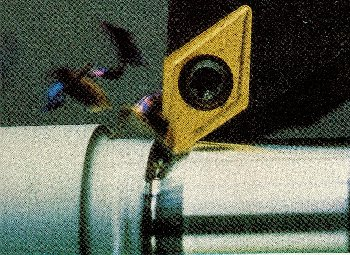
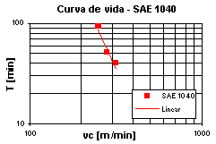

LMP>Research Guidelines>GEODEF>Machinability Assays of Metallic Alloys
OBJECTIVESWith the purpose of obtaining machining data for further comparative analysis among metallic alloys with metallurgical alterations, in order to verify improvement on machinability, the Defined Geometry Tools Machining (GEODEF) develops machinability assays works, regarding criterions such as tool life, machining forces, surface quality and chip type and shape. These works are made in partnership with GERDAU S.A. firm, which supplies
the metallic alloys, and with a few defined geometry tool manufacturers.  PROCEDURESFor the tool life analysis, assays are made with different cutting speeds, keeping other parameters fixed (cutting depth, feed, tool geometry and others). From pre-established measurements during the assay, wear accompaniment curves are written, which provide the tool life curve (Taylor). 
For the surface quality assay, the parameters Ra, Rz and Rt are measured, changing feed, cutting speed and tool nose radius. RESULTSThe results obtained on machinability assays showed that
there might have machinability behavior variations with small permissible
changes of metallurgical elements for certain material. |
| Contact:
GEODEF Rolf Bertrand Schroeter Prof. Dr. Eng. |
Last update 07.07.2006 |